UDN
Search public documentation:
DevelopmentKitGemsPlatformerStarterKit
日本語訳
中国翻译
한국어
Interested in the Unreal Engine?
Visit the Unreal Technology site.
Looking for jobs and company info?
Check out the Epic games site.
Questions about support via UDN?
Contact the UDN Staff
中国翻译
한국어
Interested in the Unreal Engine?
Visit the Unreal Technology site.
Looking for jobs and company info?
Check out the Epic games site.
Questions about support via UDN?
Contact the UDN Staff
UE3 Home > Unreal Development Kit Gems > Platformer Starter Kit
UE3 Home > Getting Started: Programming > Platformer Starter Kit
UE3 Home > Getting Started: Programming > Platformer Starter Kit
Platformer Starter Kit
Last tested against UDK June, 2011
Overview
This starter kit has example code which you can use as a starting point to develop a side scrolling platformer game such as Shadow Complex.
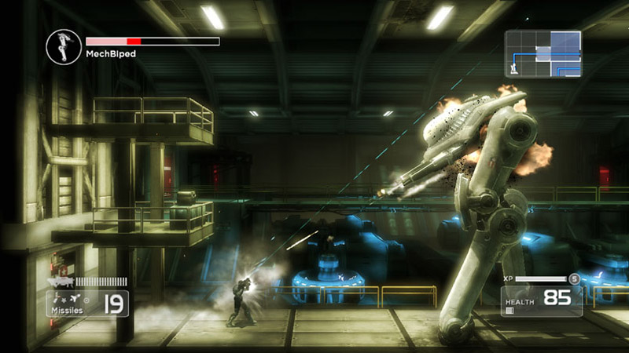
What's included?
- Non player controller pawns (SPG_AIPawn) - This NPC pawn is able to chase after the player. When it bumps into the player it will then explode and deal some damage to the player. Players have to shoot them to avoid getting killed.
- Side scrolling camera (SPG_Camera + SPG_CameraProperties) - This camera adds an offset, that is stored in SPG_CameraProperties) to the player's location. It then adjusts the camera's rotation to face the player to create a side scrolling camera.
- Game info using an archetyped pawn and weapon (SPG_GameInfo) - The game info creates an archetyped pawn for the player and gives the player an archetyped weapons. Archetypes are used here as it allows game designers to quickly adjust parameters without having to recompile.
- Inventory manager (SPG_InventoryManager) - Inventory managers by default aren't able to spawn inventory based on archetypes.
- Player controller (SPG_PlayerController) - This player controller locks the movement axis as well as handling player rotation.
- Player pawn (SPG_PlayerPawn) - This player pawn handles turning to act like a platformer pawn, which interpolates between left and right only. It also handles aiming up and down. It also has code which handles where weapon projectiles should fire from.
- Weapon (SPG_Weapon) - This weapon class can be archetyped as most of the properties have been exposed to Unreal Editor. It also handles mesh attachment as well as special effects and sounds when the player fires the weapon.
- HUD (SPG_HUD) - Simple HUD which displays the health of the player's pawn.
- Pick up (SPG_HealthPickup) - Simple pick up that NPC's randomly drop when they die.
Code structure
How does the camera work?
The camera works by setting the camera's location and rotation within SPG_Camera. Which camera class to use is defined within the PlayerController. Within SPG_PlayerController, notice how SPG_Camera is defined in the default properties. For every frame that is rendered, the UpdateViewTarget function is called. SPG_Camera sets the camera location to the target's location, which is usually the player's pawn, plus the CameraOffset stored within the archetype of SPG_CameraProperties. This was done to allow adjusts to the camera offset by done within Unreal Editor and on the fly without having to recompile the source code. Finally, the rotation of the camera is set by aiming the camera towards the target's location. This ensures that the camera is always looking at the target regardless of the offset.How does the game work?
The game info is set by Unreal Editor when playing within Unreal Editor. You may need to tweak the configuration files to make this the default game type. SPG_GameInfo stores references to two archetypes, one for the player's pawn and the player's default weapon. Archetypes are used here to allow quick adjustments within Unreal Editor and on the fly without having to recompile the source code. When the player requests a pawn, SpawnDefaultPawnFor is called. Here the player pawn archetype is spawned and given to the player. When the default inventory is given to pawns, the archetyped weapon is given to the pawn. SPG_GameInfo also defines the player controller class and the HUD class within the default properties.How does the non player controlled pawns work?
In this stater pack, there are pawns that simply run up to you and explode on contact. Because only simple logic is required, AIControllers is not required at all. By default the pawn's physics mode is set to falling. This ensures that pawns that are spawned in the air will fall to ground. When the pawn lands on the ground or another actor, the Landed event is called. When this is called the pawn's physics is set to PHYS_Flying. This makes it easier to simple adjust the velocity and acceleration to ensure that the pawn is chasing after the player. At every tick, the NPC pawn checks if it is has en enemy. If it doesn't, it will assign one by looking up any local player controllers and their pawns. If it does have an enemy and it is flying, then it will set its rotation to look towards the enemy. It will also set its velocity and acceleration to move towards the enemy. When the pawn is killed, it called the PlayDying function. The PlayDying function enables the rag doll mode for the skeletal mesh. If per chance, a pick up is to be spawned; it is then created using the referenced archetype. When the pawn bumps into a player pawn, it simply explodes, deals some damage and then destroys itself.How does the player controls work?
The player controls are done within SPG_PlayerController.PlayerWalking.PlayerMove. By using the camera rotation's axes, we can make sure that the pawns move using camera view coordinates. Since this is side scrolling game, only the Y axis is required and the aStrafe values is required. This forces the player to only be able to move to the left or to the right. As the player moves in either direction, the desired rotation is set. This ensures that the player's pawn looks to the left or the right depending on the movement. Normally, in UpdateRotation both the mouse X and mouse Y would be handled, however since the yaw is automated only mouse Y needs to be processed. Mouse Y in this case would control the pitch of the pawn. This is then handed off to the pawn. In SPG_Pawn, the yaw is done by rotating the pawn where as the pitch is done by adjusting the aim offset anim node within the pawn's skeletal mesh component's anim tree. The aim offset anim node tweens the player's pawn to different aiming poses which work well. Review animation nodes for further clarification.How does the weapon work?
Weapons in this stater kit work very similar to how weapons work in Unreal Tournament 3. When the weapon is first spawned and given to the player, ClientGivenTo is executed. This is where SPG_Weapon attaches the third person weapon mesh onto the player's pawn. When the player fires the weapon, it sends it to the appropriate firing state which eventually calls ProjectileFire. The projectile's spawned location and rotation is acquired from the player pawn's GetWeaponStartTraceLocation and GetAdjustedAimFor functions. In the case of SPG_PlayerPawn it simple returns a socket's location and rotation. This ensures that the projectile is fired from the correct place and flies away in the correct direction. When the weapon is fired, PlayFireEffects is called, which activates the muzzle flash. When the weapon stops firing, StopFireEffects is called, which deactivates the muzzle flash.Why use a separate player pawn?
A separate player pawn was used in this starter kit since some of the functionality only applied to the player's pawn such as aiming up and down. As these don't apply to the NPC's it was decided to separate it out. It also allows an easy way to check if the pawn belonged to a player or not, although this could have easily be done by also checking the pawn's controller.How to use this starter kit?
- Download UDK.
- Install UDK.
- Download the zip file.
- Unzip the contents into your UDK base directory. (e.g C:\Projects\UDK-2011-08\) Windows may inform you that you may be overwriting existing files or folders. Click Ok on all of them.
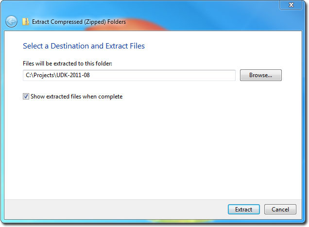 - Open up DefaultEngine.ini inside the UDKGame\Config directory with Notepad. (e.g C:\Projects\UDK-2011-08\UDKGame\Config\DefaultEngine.ini)
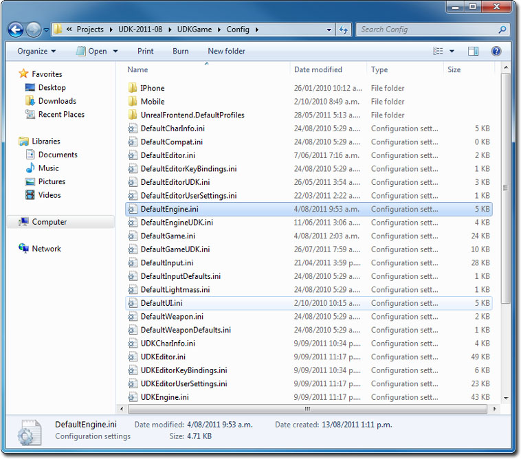 - Search for EditPackages.
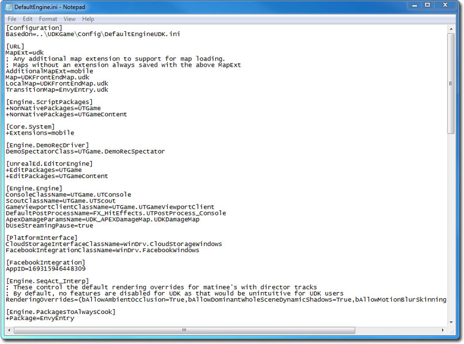 - Add +EditPackages=StarterPlatformGame
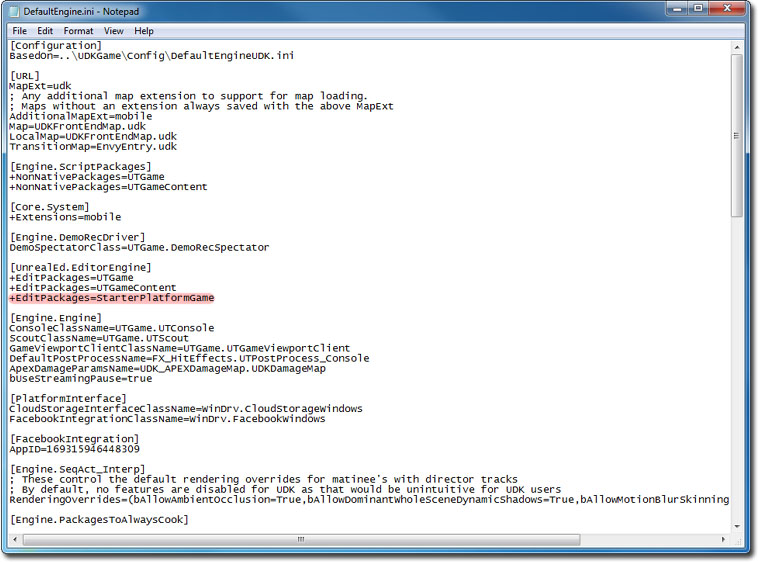 - Launch the Unreal Frontend Application inside the Binaries directory. (e.g C:\Projects\UDK-2011-08\Binaries\UnrealFrontend.exe)
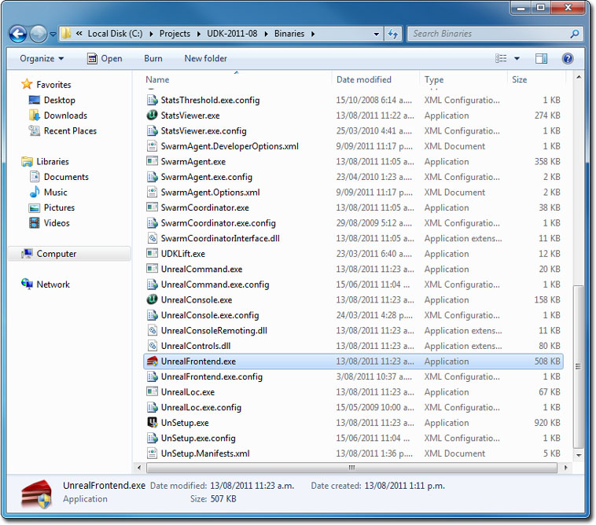 - Click on Script, then Full Recompile.
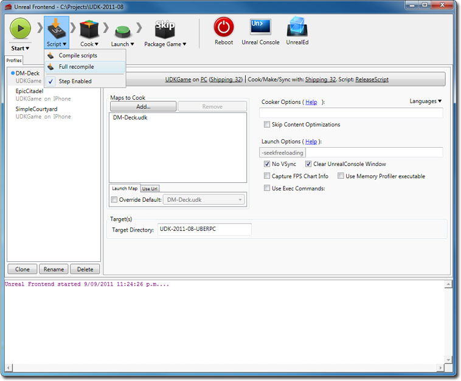 - You should see the StarterPlatformGame package get compiled last.
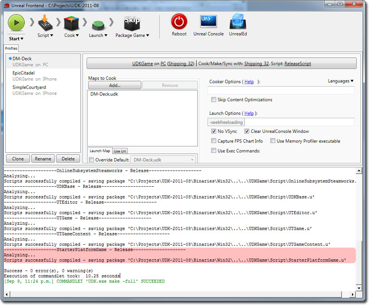 - Click on UnrealEd to open up Unreal Editor.
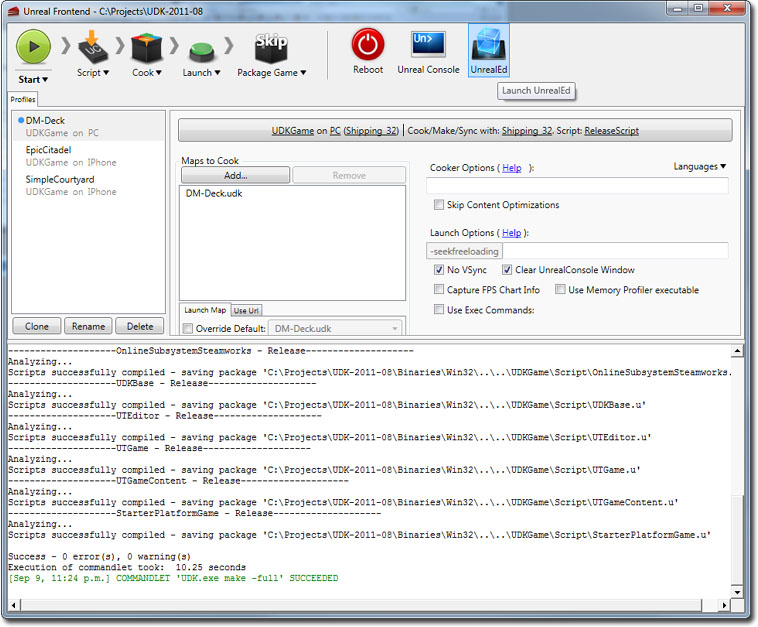 - Click on the Open button, and open up StarterPlatformMap.udk.
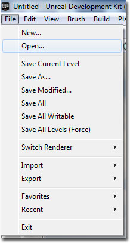
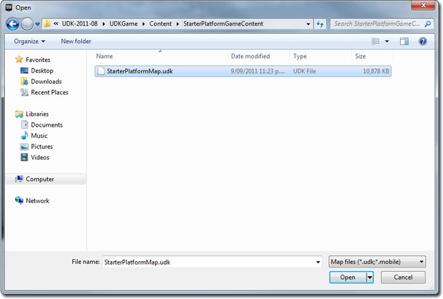 - Click on the Play In Editor button to play the platform starter kit.
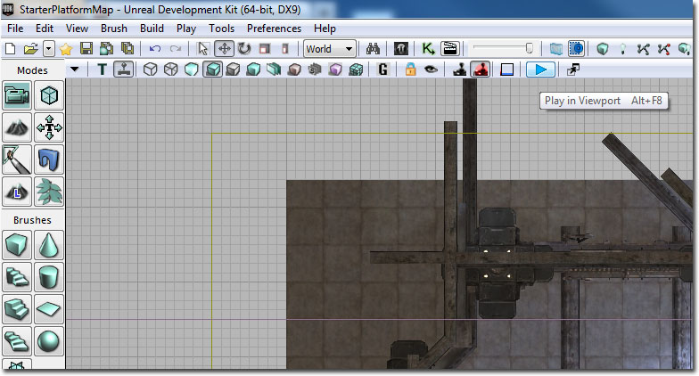
Downloads
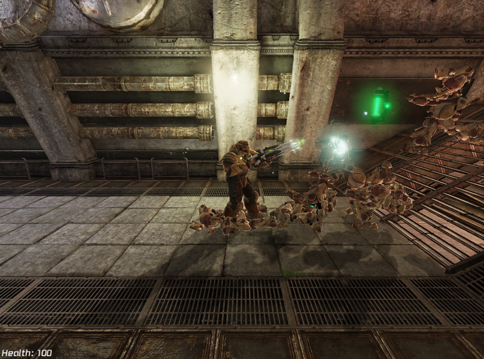
- Download the code and content for this starter kit.